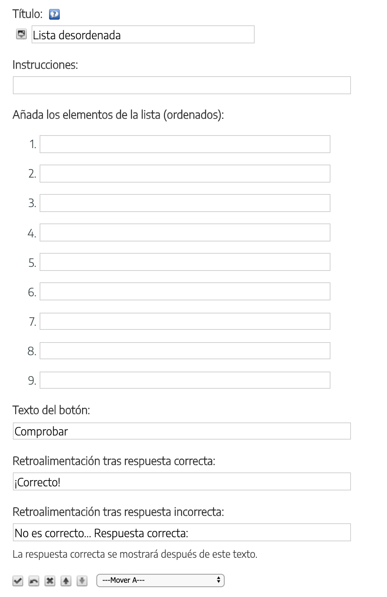

Guía de creación de REA con eXeLearning
Lista desordenada
Utilizaremos este iDevice para que el alumno ordene varios ítems propuestos, pulsando en las flechas que aparecen al lado derecho de cada ítem (en Visualización previa).

Añadiremos los ítems en el orden correcto. El programa los presentará de forma desordenada para que el alumno los coloque correctamente.
Se pueden añadir instrucciones al principio, y cambiar el texto del botón y de la retroalimentación.
Ejemplo de Lista desordenada
Ordena el recorrido desde que una sustancia llega a la nariz hasta que nos damos cuenta de su olor.
- fosas nasales
- mucosa olfativa
- quimioreceptor
- nervios
- cerebro
Practica exe: crear lista desordenada
- Abre el archivo miarchivo.elp que has creado en la actividad anterior (puedes hacer doble clic sobre él)
- Crea un iDevice "Lista desordenada" en el nodo "Preguntas". Modifica el título
- Escribe unas instrucciones e introduce varios ítems ordenados de forma correcta
- Modifica los textos del botón de comprobación, así como los de retroalimentación (tanto en respuesta correcta como incorrecta)
- Una vez terminado, haz clic en el botón para ver el resultado
- Guarda los cambios. (Archivo > Guardar)
Si tienes alguna duda puedes consultar el siguiente vídeo:
Obra publicada con Licencia Creative Commons Reconocimiento Compartir igual 4.0